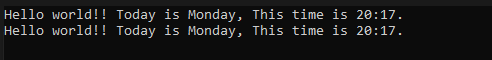
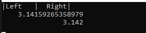

[C#] Stringの補間式(interpolation)
こんにちは。明月です。
この投稿はC#でStringの補間式(interpolation)に関する説明です。
最近、C#のコード標準でStringの補間式に関して説明がありました。
既存、C#でStringのフォーマットを使うとString.Format関数を利用しましたが、それが数字で「{0},{1}」で表現するので、可読性が悪いです。
なので、もっと可読性を上がるため、に補間式(interpolation)があり、もっとフォーマットをしやすく表現できます。
link - https://docs.microsoft.com/en-us/dotnet/csharp/language-reference/tokens/interpolated
StringでStringの補間式を使うために、ダブルクォートの前に「$」を付けて設定することで使えます。
using System;
namespace NewtonsoftExample
{
class Program
{
// 実行関数
static void Main(string[] args)
{
// 変数宣言
string name = "Hello world!";
var date = DateTime.Now;
// 既存のString.formatだ。
Console.WriteLine("{0}! Today is {1}, This time is {2:HH:mm}.", name, date.DayOfWeek, date);
// Stringの補間式(interpolation)
Console.WriteLine($"{name}! Today is {date.DayOfWeek}, This time is {date:HH:mm}.");
Console.ReadKey();
}
}
}

Stringのの補間式(interpolation)は下記とおりになります。
{<interpolationExpression>[,<alignment>][:<formatString>]}
| 要素 | 説明 |
|---|---|
| interpolationExpression | 形式化する結果を生成する表現式です。nullの結果のライン表現はString.Emptyです。 |
| alignment | 補間表現式の結果の文字列で最小文字数を定義する定数式です。正の場合は、文字列表現が右揃えされます。負の場合は左揃えです。 |
| formatString | 式の結果タイプによってサポートされる形式の文字列です。 |
using System;
namespace NewtonsoftExample
{
class Program
{
// 実行関数
static void Main(string[] args)
{
// 文字列表現が右揃えされます。負の場合は左揃えです。
Console.WriteLine($"|{"Left",-7}|{"Right",7}|");
const int FieldWidthRightAligned = 20;
// PIの値
Console.WriteLine($"{Math.PI,FieldWidthRightAligned}");
// 3桁まで表現する。
Console.WriteLine($"{Math.PI,FieldWidthRightAligned:F3}");
Console.ReadKey();
}
}
}

補間表現式は三項演算子でも計算可能です。
using System;
namespace NewtonsoftExample
{
class Program
{
// 実行関数
static void Main(string[] args)
{
int data = 0;
// 三項演算子
Console.WriteLine($"{(data == 0 ? "Zero" : "Number")}");
Console.ReadKey();
}
}
}
中括弧の表現は中括弧を重ねることで表現できます。
using System;
namespace NewtonsoftExample
{
class Program
{
// 実行関数
static void Main(string[] args)
{
// 中括弧表現
String data = "Curly braces";
Console.WriteLine($"{{{data}}}");
Console.ReadKey();
}
}
}

ここまでC#でStringの補間式(interpolation)に関する説明でした。
ご不明なところや間違いところがあればコメントしてください。
「Devlopment note / C#」の他投稿
- [C#] 非同期ソケット通信(IOCP)-APMパターン2020/05/18 18:45:37
- [C#] 非同期ソケット通信(IOCP)-EAPパターン2020/05/15 19:31:02
- [C#] NPOIを利用してExcelを読み込んで出力する方法2020/05/08 10:43:52
- [C#] NPOIライブラリを利用してエクセルファイルを生成する方法2020/05/07 01:49:01
- [C#] Geckoライブラリを利用してウェブスクレイピングする方法2020/05/05 00:52:26
- [C#] PDFを作成する方法(iTextSharp)2020/05/03 10:22:40
- [C#] シリアライズ(Serialization)をする方法2020/04/30 19:32:04
- [C#] dynamicタイプの動的パラメータ-DynamicObject(WinFormでASP.MVCのViewBagオブジェクトを使用する方法)2020/04/29 22:41:32
- [C#] Stringの補間式(interpolation)2020/04/27 20:39:57
- [C#] Newtonsoft.JSONライブラリを利用してJsonデータ構造を扱う方法2020/04/23 20:19:53
- [C#] EMailを送信する方法(System.Net.Mail)2020/04/22 19:00:42
- [C#] ini環境ファイルを使う方法2020/04/22 00:09:39
- [C#] 環境設定ファイルを扱う方法(System.Configuration)2020/04/20 19:37:57
- [C#] Reflectionを利用してクラス複製する方法2020/04/17 00:34:33
- [C#] XMLをXPathを利用してデータを取得する方法2020/04/16 00:47:17
最新投稿
- [Python] XMLファイルを扱う方法2020/06/26 19:18:14
- [Python] IOを利用してCSVファイルを扱う方法2020/06/25 18:20:30
- [Python] 21. データベース(mariaDB)を連結する方法2020/06/24 18:51:50
- [Python] 20. stringフォマード(Formatting)と補間法(interpolation)2020/06/23 19:03:21
- [Python] 19. 非同期IOのasync/await(asyncio)を使う方法2020/06/22 18:10:12
- [Python] 18. ネットワーク(Socket)通信する方法2020/06/18 19:53:56
- [Python] 17. スレッド(Thread)とロック(lock)、そしてデッドロック(deadlock)2020/06/18 00:19:45
- [Python] 16. IO(ファイル読み取り、書き込み)を扱う方法2020/06/16 18:37:00
- [Python] 15. クラスを継承する方法2020/06/15 18:20:07
- [Python] 14. クラスプロパティ(Property)2020/06/12 17:45:13
- [Python] 13. クラス関数(class method)とダック・タイピング、そして特殊メソッド2020/06/11 19:42:29
- [Python] 12. クラス(Class)を使う方法2020/06/10 19:33:33
- [Python] 11. デコレーター（Decorator）を使う方法2020/06/09 17:27:18
- [Python] 10. モジュールとパッケージ(import)2020/06/08 19:07:50
- [Python] 09. 例外処理する方法2020/06/05 17:11:47